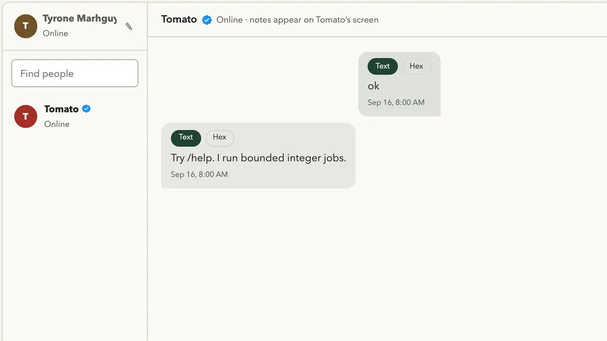

The computer
A custom 32-bit CPU, its assembly-written OS, and the Envelop endpoint that runs on it.
Inside Tomato OSTomato OS × Envelop
Tomato is not a mascot in a chat list. It is the computer at the other end: Envelop runs inside Tomato OS, receives your message, and returns a reply labeled with the machine that answered.

01 / After you press Send
Envelop keeps the message queued until a nearby verified bridge can reach the Envelop app inside Tomato OS. The Tomato CPU receives it there. A reply comes back with its origin attached.
If physical Tomato is away, your message waits. You may start a separate Virtual Tomato preview, but Envelop never converts an uncertain hardware attempt into a simulated success.
02 / Separation of powers
Tomato explains the machine. Envelop handles the conversation. The label on the reply tells you where those worlds met.
A custom 32-bit CPU, its assembly-written OS, and the Envelop endpoint that runs on it.
Inside Tomato OSThe public chat, identity, queue, unread state, typing feedback, and nearby bridge that carry the conversation.
Meet EnvelopPhysical Tomato means completed hardware execution. Virtual Tomato means an explicit browser preview. A timeout means unknown.
Read the evidence boundary03 / More than chat
Supported language can become a bounded Tomato program. Envelop shows the interpreted request, program, bytecode, target, and result instead of hiding the work behind an answer.